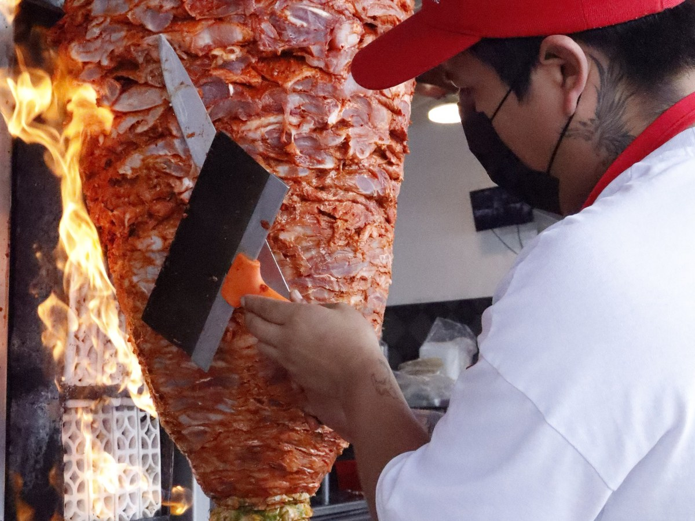

Ubicación disponible
Aguascalientes, Aguascalientes, México.
Horarios
Todos los días desde la 1:00 p. m.; el cierre varía entre 3:00 y 5:00 a. m.
449 497 1521
Sabor local · Aguascalientes
Consulta el menú, elige tu antojo y escríbenos por WhatsApp. También llevamos el sabor de Ban Taco a tus eventos.
Selección de la casa
Una selección de platillos reales del menú para conocer distintos sabores de la casa.
Novedades
Consulta las promociones, paquetes o eventos temporales activos de Ban Taco.
Banquetes
Cuéntanos la fecha, el tipo de evento y el número aproximado de personas. Te compartiremos disponibilidad y opciones sin inventar paquetes ni precios.
Horarios
Abrimos todos los días a la 1:00 p. m.
Todos los horarios de cierre corresponden a la madrugada del día siguiente. Pueden cambiar en días festivos.
Consultar por WhatsAppUbicación
Abre la ruta desde tu ubicación o consulta el mapa antes de visitarnos.
Aguascalientes, Aguascalientes, México.
Todos los días desde la 1:00 p. m.; el cierre varía entre 3:00 y 5:00 a. m.
449 497 1521
Opiniones
Comentarios incluidos en el proyecto original. No se presentan como reseñas verificadas.
“Los tacos tienen muchísimo sabor y el servicio fue rápido y amable. Se siente como comida hecha con cariño.”
“Contratamos Ban Taco para una reunión familiar y todos preguntaron de dónde eran los tacos. Excelente atención.”
“La gringa de pastor y las salsas son una joya. Lugar limpio, moderno y con sabor auténtico.”

Nuestra historia
Ban Taco nació del gusto por reunir a la familia alrededor de una buena tortilla, carne bien sazonada y salsas con carácter.
En nuestra cocina celebramos lo auténtico: tacos, quesadillas, tortas y especialidades para quienes buscan sabor mexicano, porciones honestas y trato amable.
Comida para quedarse, para llevar y para convertir cualquier evento en una mesa llena.
Detrás del sabor
Los videos se reproducen manualmente para ahorrar datos. Al iniciar uno, el otro se pausa.
Un vistazo a la preparación del pastor en el restaurante.
Trabajo en la plancha y armado de uno de los platillos.
Galería
Equipo, salón y fachada. Las fotografías de comida se mantienen exclusivamente en el menú.
Mientras sale tu pedido
Los juegos permanecen detenidos hasta que abras el panel y presiones iniciar.
Usa ← → en computadora o los botones táctiles. Cada taco suma; uno quemado resta.
Abre el juego y presiona Iniciar.
Presiona espacio, ↑ o el botón Saltar. Los limones amarillos brillantes suman puntos.
Abre el juego y presiona Iniciar.
Contacto
Escríbenos por WhatsApp para pedir comida, cotizar un evento o solicitar información general.